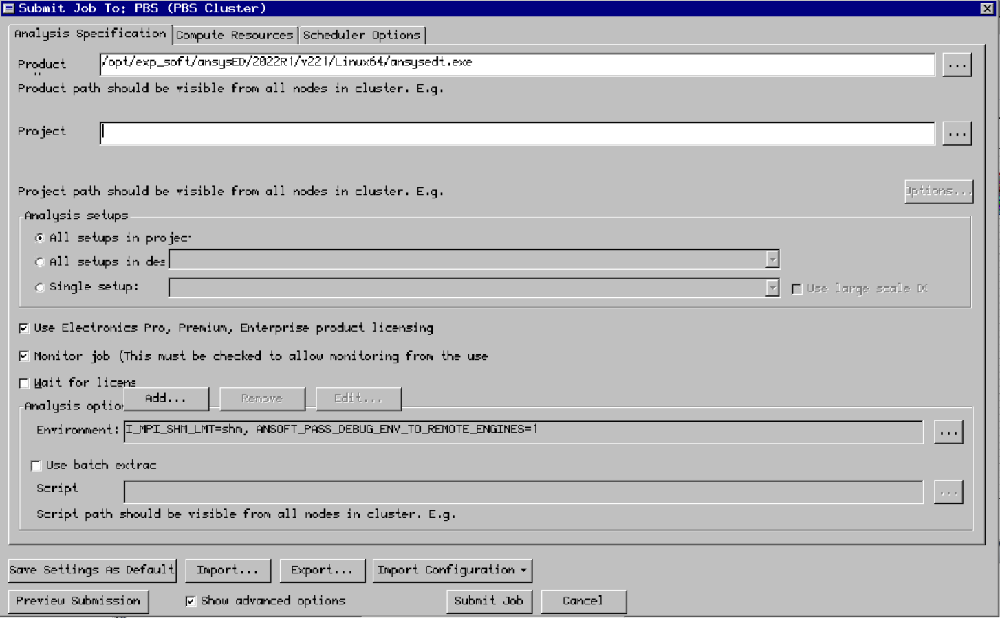

Appendix
Using AnsysHFSS on the HPC cluster
Connecting to the desktop environment
To launch ansys hfss you need to use x2go or a similar x11 forwarding program. Connect to the login node using the XFCE desktop environment setting in x2go.
Launching a job from ansysHFSS
When you have opened ansysHFSS click the submit button in the simulation tab

Next setup the simulation parameters as shown in the image and select the directory of the project that you want to simulate: 
In the compute resources tab select the ammount of cores, ram and the number of variations to distribute:

In the scheduler options tab enter a custom job submission command. For example:
-l procs=180,pmem=2gb -q 'batch@rudens.hpc.rtu.lv' -N hfss -d /home_beegfs/<b>your user name</b>/ -l walltime=5:00:00 -j oe
Now just click submit job and everything should be running!
Ansys Remote Solver Manager (RSM)
For ansys Electronics Desktop see the other section “Using ansysHFFS on the cluster” in the guide
Prerequisites
Ansys RSM must be installed on your personal computer. You need to be connected to the RTU network - either directly or indirectly through a VPN. You also need to add the key as decribed in the next section and then go throug the “Setting up RSM” section.
Adding keys for ansys on the cluster
Step 1: Download and install PuTTY. Download and install PuTTY from the following location: http://www.chiark.greenend.org.uk/~sgtatham/putty/download.html If this link is invalid, perform a web search for “PuTTY”.
Step 2: Create a cryptographic key. Create a cryptographic key using PuTTYGen (puttygen.exe) as follows:
On the PuTTY Key Generator dialog box, click Generate.
Change the Key comment to include your machine name and Windows username.
Do not enter a key passphrase.
Save the private key file without a passphrase. For example,
:\Program Files\Putty\id_rsa.ppk. If you use a passphrase, jobs will hang a prompt for you to enter the passphrase. Be sure to secure the private key file using some other means. For example, if only you will be using the key, save it to a location where only you and administrators have access to the file, such as the My Documents folder. If multiple users share the same key, allow the owner full control, then create a group and give only users in that group access to this file. If your Linux cluster uses OpenSSH, convert the key to OpenSSH format by selecting Conversions > Export Open SSH key in the PuTTY Key Generator dialog box.
Move the public portion of the key to the Linux machine. This requires you to edit the ~/.ssh/authorized_keys file on the Linux machine as follows: a. Type: nano ~/.ssh/authorized_keys b. Copy all the text from the box under Public key for pasting and paste it into ~/.ssh/authorized_keys. All of this text should be one line. If some keys exist, add a new line. c. Ctrl + x and then press y
Step 3: Modify system environment variables.
Open the Windows System Properties dialog box.
On the Advanced tab, select Environment Variables. The Environment Variables dialog box appears.
In the Environment Variables dialog box, locate the Path variable in the System variables pane.
Select the Path variable and then click the Edit button. The Edit System Variable dialog box appears.
Add the PuTTY install directory to the Variable value field (for example, C:\Program Files\putty) and then click OK.
In the System variables pane, click the New button. The New System Variable dialog box appears.
In the New System Variable dialog, create a new environment variable named KEYPATH with a value containing the full path to the private key file (for example,
:\Program Files\Putty\id_rsa.ppk).
Use a user variable if the key file is used only by you. Use a system variable if other users are sharing the key file. For example, if a Windows 7 user has a key file in My Documents, the variable value should be
Settings<user>\My Documents\id_rsa.ppk). 8. Click OK. 9. Reboot the computer for environment changes to take effect.
Step 4: Perform an initial test of the configuration.
Run the following from the command prompt (quotes around %KEYPATH% are required): plink -i “%KEYPATH%” unixlogin@unixmachinename pwd
When prompted by plink: If plink prompts you to store the key in cache, select Yes. If plink prompts you to trust the key, select Yes.
Setting up RSM
Open ansysRSM on your machine.
You should see the following screen. Press the button to add a new cluster(marked with a red arrow).
Now enter a name for the new cluster on the right side under the HPC configuration header. For the HPC type choose “custom”. In the submit host enter “ui-2.hpc.rtu.lv”. In the custom HPC type enter “TORQUE”. Check the “Use HPC protocol…” checkbox and select “Able to directly submit and monitor HPC jobs”. Lastly click Apply at the bottom.

In the second settings screen set everything as shown in the following image, but change the part “yourUserAccount” to your actual HPC account username. Click Apply.

First double click on the credentials tab on the left side then click the button on the right panel to create new credentials.
In the promt that appears enter your HPC username and the password that you use to login to the HPC cluster
Select the cluster that you just created and any others where you wish to use this account.
Go back to the cluster setup by double clicking on the cluster name

Select the queues tab(1.). Then press the button(2.) to load the queues from the cluster. Check the queues that you will need to use in the Enabled column. Finally, test if the queues work by clicking the submit button(3.) and if everything is setup correctly you should see a green checkmark next to the submit button. Click Apply.
Access to HPC cluster using MobaXterm
MobaXterm is a freeware that offers enhanced terminal for Windows with X11 server, SSH clients and other network tools. The personal home edition of MobaXterm can be downloaded from http://mobaxterm.mobatek.net/download-home-edition.html. The free personal edition supports 12 sessions, which is sufficient for our use.
Install and launch MobaXterm. When Windos Firewall prompted allow
xwin_mobaxonly through private networks, and untick access via Public networks. Do not access these services from open networks.

In a case of using portable version you need to setup right working directories: Settings => Configuration => General
For Persistent root directory use MobaXterm install directory

To create an
SSHsession, selectSessionand chooseSSHin theSession settings.Set remote host as
ui-2.hpc.rtu.lv, tickSpecify user_nameand type your user_name in the box provided. Leave the port to be22. Be sure that you markCompressionbox inAdvanced SSH settings. This is quite important for slow connections. ClickOK.

You should now be able to see
ui-2.hpc.rtu.lv(user_name)in the Sessions tab. Select this session. This should prompt you for your password. This is your RTU HPC password.Make setting for X-Server (Settings => Configuration => X-server) like in a picture:

Connect with SSH : Sessions => User Sessions => your’s session name
Generating Keys on Windows using MobaXterm
There are multiple ways to generate SSH key pairs on a Windows system, and we present here instructions for generation and use SSH keys on MobaXterm as our preferred tool for its user friendliness. The MobaXterm application includes a tool to help you generate SSH key pairs. Before starting, you should login to RTU HPC with MobaXterm using your account username and password. Once you are logged in:
Click on
ToolsandMobaKeyGen (SSH key generator)

In the section Parameters make sure to set the following properties:
Type of key to generate:
RSA(this is theSSH-2protocol)Number of bits in a generated key:
4096Hit the
Generatebutton.During generation, move the mouse cursor around in the blank area.

When finished, make sure to protect your generated key with a passphrase. This passphrase is used for encrypting you private key to protect it against the private key file theft or being lost. When using the key for login, you will have to enter it (or the first time you load it into the SSH key agent). Note that when being asked for the passphrase this does not occur on the cluster but on your local computer.
Save the private and public key. The default name under Linux for the public key is
id_rsa.pubandid_rsafor the private key, but you can name them however you want (the.pubis NOT automatically added). Note that the private key will be stored in Putty format (.ppkextension is added automatically).
Converting Putty (.ppk) key into the OpenSSH format
Click
Conversionsand selectExport OpenSSH key. Give the file the same name as your.ppkprivate key file above (just without the.ppk).
You should end up with three files:
id_rsa.pubThis file yoy can paste into~.ssh/authorized_keysfile on yours HPC accountid_rsa.ppkThis is your private key in Putty formatid_rsaThis your private key in OpenSSH format.
Import key in Windows MobaXterm
Click
Settings=>Configuration=>SSHtabBe sure to activate the 4 options :
SSH keepalive
Use Internal SSH Agent
Use External Pageant
Forward Agent
Click on the + sign to import your private key (test_key.ppk in example ). It’s also possible to import a key generated on linux or MacOS.